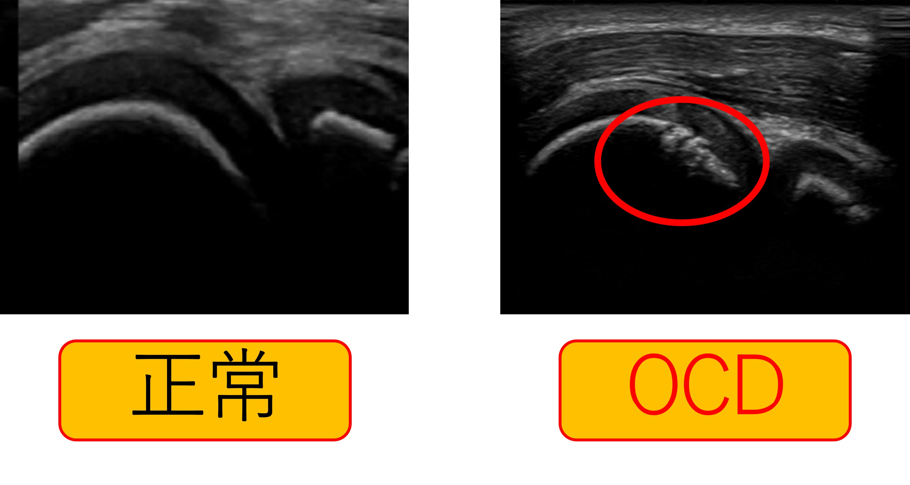
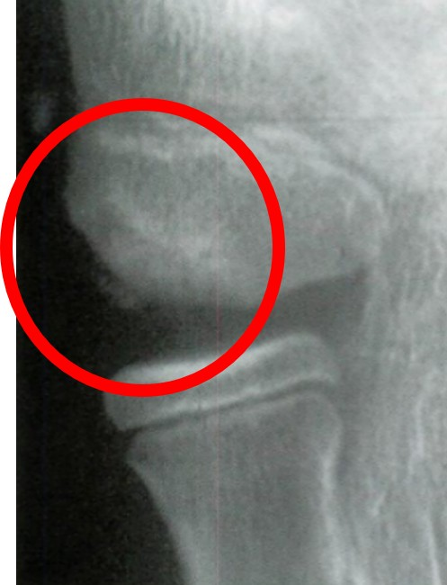
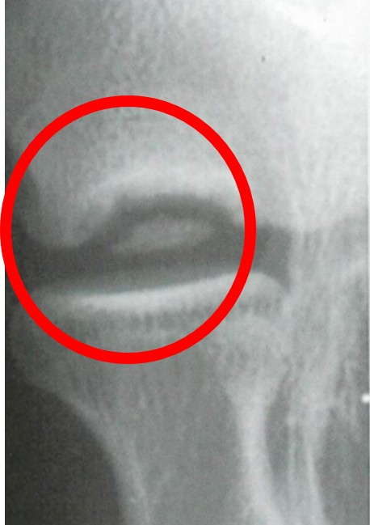
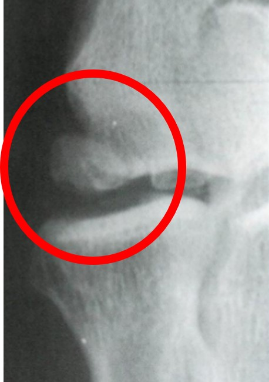
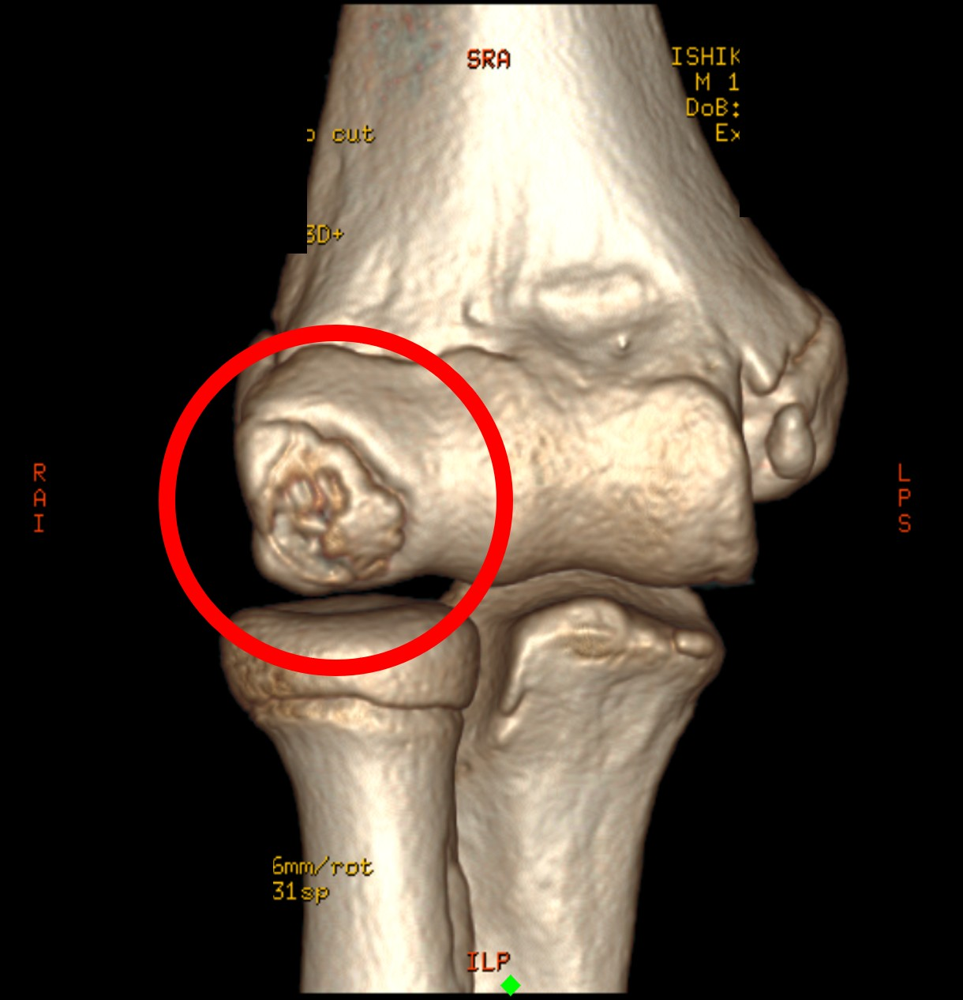
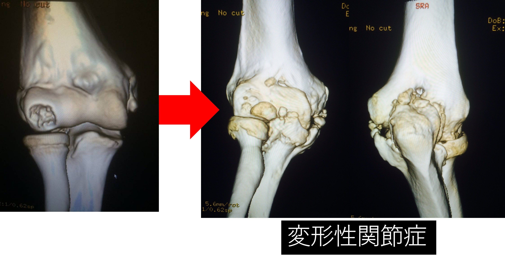
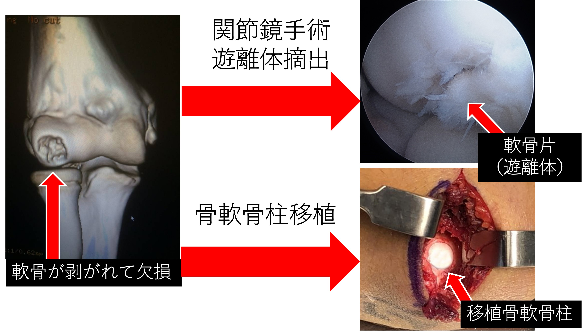
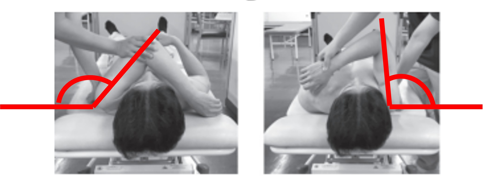

1どんな病気？
離断性骨軟骨炎（OCD）は、成長期に繰り返される投球動作のストレスなどにより、肘の外側の骨（上腕骨小頭）の軟骨とその下の骨（軟骨下骨）に障害が生じる病気です。進行すると、痛みや関節の動きの制限、パフォーマンスの低下を引き起こすことがあります。初期には痛みがないこともあります。
2検診でわかること
検診では、放射線被ばくのないエコー（超音波）で肘の状態を評価できます。身体への侵襲が少なく、早期発見に役立ちます。

異常が疑われた場合は、専門医による診察や追加の画像検査が必要です。
3早期発見のメリット
4画像でみる進行例




OCDは進行するにつれて、X線やCTなどの画像で骨や関節面の異常がより明確になることがあります。進行した病変では、関節に深刻な障害を生じる可能性があります。
5進行するとどうなる？

進行すると、関節内に遊離体（はがれた軟骨のかけら）が生じたり、関節の変形が進行することがあります。重症例では、変形性関節症に至る可能性があります。
6治療

早期で安定した病変では投球休止・制限などの保存療法が選択されます。病変の進行度に応じて、関節鏡を用いた遊離体摘出や骨軟骨柱移植などが検討されます。
7予防につながるポイント

肩の可動域制限や全身の関節可動域の低下は、肘への負荷やOCDと関連する可能性があります。
肩や全身の柔軟性・可動域の評価と、必要に応じたストレッチやコンディショニングは予防に向けた取り組みとなります。ただし、これらの介入によるOCD発症予防効果が確立されているわけではありません。
※ 本ページは一般的な疾患解説です。検診の超音波検査だけで診断を確定するものではありません。症状や異常がある場合には専門医へご相談ください。
トップページに戻る →